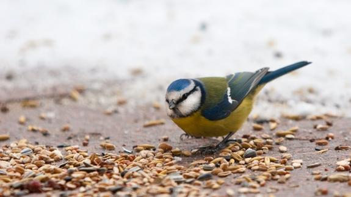

Ingredientes
- Leche
- Bol para echar los cereales
Elaboración
¿No hace falta que te explique este complicado mecanismo, verdad? Bueno, por si acaso te lo explico. Bol, cereales, leche, cuchara, comer y disfrutar, y si ya eres el rey del fitness repites el proceso las veces que puedas.
Consejo
Avena NO POR FAVOR, si eso para el pájaro.
